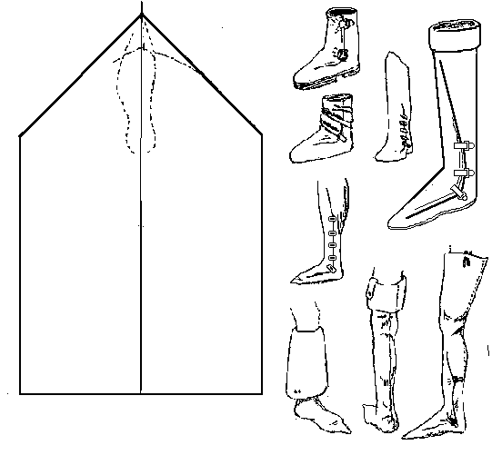
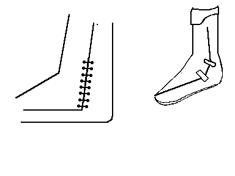

Thigh High Fold-Over Boot
I have no archaeological evidence for this boot design, although the
foldover vamp closure is well documented in the finds. The basic design appears in Jean
Fouquet's painting, the "Adoration of the Magi",
The Hunting Book, and
Rene d'Anjou's tract on tournaments.
I've also seen it, and variations of it shown in a number of more modern sources such as
Norris,
Wilson,
The Medieval Soldier, and
Knights.
According to
the Dictionary of Costume, this style of footwear, called the Gamashe in the 17th century, is the ancestor of the military legging of later centuries. Such linen leggings are distinguishing marks of peasants and farmers for centuries. In any case, I have no evidence that it appears any earlier than the 14th century.
It is a lined turned shoe, made with a rand or a full welt. The method of securing the boot appears to vary, from straps and buckles, to lacing a stretch from 10 to 12 inches along the side of the leg, even all the way up from the ankle to the knee.

It may be made of a any of a variety of leathers, or even fabrics. The lining of the turned back cuff was often of a different color than the outside portion..
The basic design shown is MY estimate of the pattern, and may not be absolutely accurate.
Return to
[Index] or
[Next]
Footwear of the Middle Ages - Historical Shoe Designs/Number 27, by I. Marc Carlson. Copyright 1996,
2003
This page is given for the free exchange of information, provided the Author's Name is included in all future revisions, and no money change hands, other than as expressed in the Copyright Page.